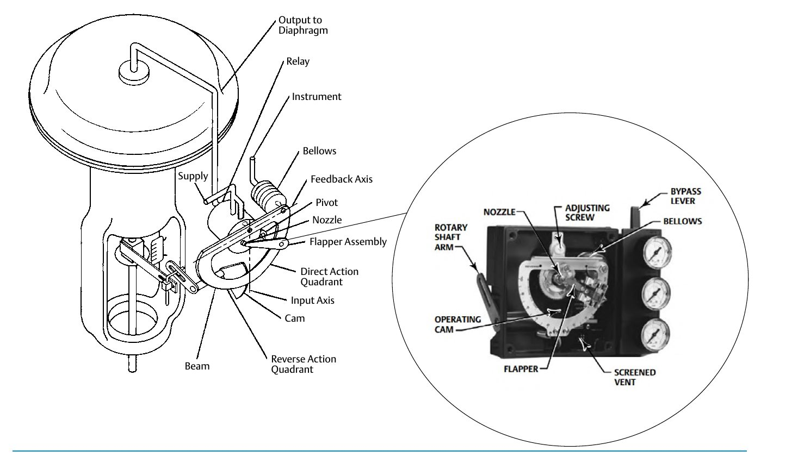

How a Pneumatic Positioner Works

- 1Beam and feedback axis compare actual stem position (fed back through the cam) to the incoming command signal
- 2The flapper moves closer to or farther from the nozzle, changing nozzle back-pressure
- 3The relay amplifies that change into the diaphragm output pressure that drives the actuator — stopping only when actual position matches command
After Control Valve Handbook, 6th ed., Fig. 4.1 — used directly; own printed labels retained, no markers added. Component Index: cvh-cmp-pneumatic-positioner-schematic.